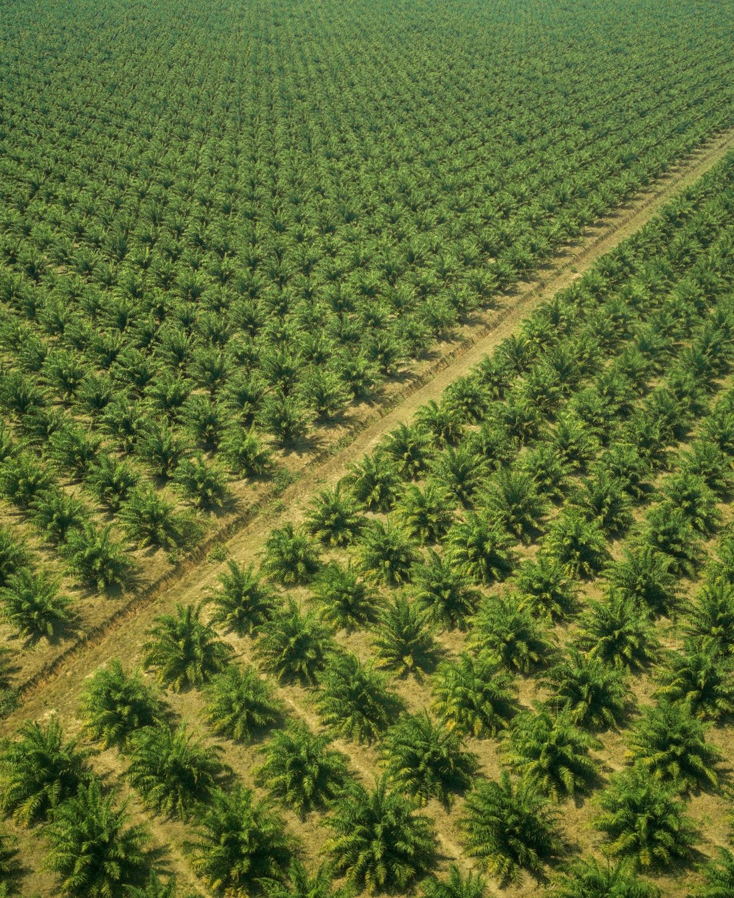

El grupo PrestigeThe Prestige group
Más de dos décadas de trabajo paciente y juicioso. Hoy tenemos una empresa de palma de aceite integrada, en una de las fronteras agrícolas del país.More than two decades of patient, disciplined work. Today we run an integrated palm oil business in one of the country's agricultural frontiers.
Nuestra hacienda en el VichadaOur estate in Vichada
Nuestra hacienda está en el Vichada. Son más de 9.000 hectáreas en total: 2.153 sembradas en palma y cerca de 2.000 dedicadas a la conservación.Our estate is in Vichada. It spans more than 9,000 hectares in total: 2,153 planted in palm and close to 2,000 devoted to conservation.

Dos empresas, una sola operación integradaTwo companies, one integrated operation
Prestige Colombia S.A.S. · la plantaciónPrestige Colombia S.A.S. · the plantation
Siembra la palma, cuida el cultivo y cosecha el fruto fresco sobre sabana degradada.Grows the palm, tends the crop and harvests the fresh fruit on degraded savanna.
Extractora Cimarrón S.A.S. · la plantaExtractora Cimarrón S.A.S. · the mill
Procesa el fruto y produce el aceite crudo de palma (CPO).Processes the fruit and produces crude palm oil (CPO).
Son dos entidades independientes: la planta le compra el fruto a la plantación a precios de mercado. Así cada negocio se mantiene disciplinado y, además, la planta puede procesar también el fruto de los pequeños productores vecinos. Ambas hacen parte de Prestige Group.They are two separate entities: the mill buys the fruit from the plantation at market prices. That keeps each business disciplined and also lets the mill process fruit from neighboring smallholders. Both belong to Prestige Group.
Del vivero al aceite crudo de palmaFrom nursery to crude palm oil
Manejamos toda la cadena nosotros mismos. Esa integración no solo nos da control sobre la calidad y los costos: también nos permite responder por que cada etapa sea responsable, con la gente y con el medio ambiente.We manage the entire chain ourselves. That integration does not just give us control over quality and cost; it also lets us ensure that every step is responsible, with our people and with the environment.
ViveroNursery
Cuidado de plántulas y preparación del suelo.Seedling care and soil preparation.
SiembraPlanting
Siembra y mantenimiento sobre sabana degradada.Planting and upkeep on degraded savanna.
CosechaHarvest
Recolección del fruto fresco (RFF).Harvest of fresh fruit bunches (FFB).
TransporteTransport
Traslado del fruto a nuestra planta.Moving the fruit to our own mill.
ExtracciónExtraction
Extracción del aceite crudo en planta propia.Crude oil extraction at our own mill.
CompostajeComposting
La materia orgánica vuelve al suelo.Organic matter returns to the soil.
Lo que hemos construido y hacia dónde vamosWhat we have built and where we are headed
- 2003 Llegamos al Vichada.We arrive in Vichada.
- 2003-2010 Probamos distintos cultivos, construimos los campamentos y la infraestructura, y montamos la logística de la zona.We trial different crops, build the camps and infrastructure, and set up the region's logistics.
- 2010-2011 Sembramos las primeras palmas sobre sabana degradada.We plant the first oil palms on degraded savanna.
- 2016 Cofundamos la Fundación APRODENA para impulsar el desarrollo social de la comunidad vecina.We co-found the APRODENA foundation to drive the social development of the neighboring community.
- 2016-2018 Construimos y ponemos a andar la planta extractora; un análisis de ciclo de vida independiente confirma una huella de carbono negativa.We build and start up the extraction mill; an independent life-cycle assessment confirms a carbon-negative footprint.
- 2022-2024 Emprendemos la segunda fase de expansión de la plantación.We begin the second phase of plantation expansion.
- 2025 Llegamos a 2.153 hectáreas sembradas y a más de 250 empleos rurales formales, ya operando de forma rentable y a escala.We reach 2,153 hectares planted and more than 250 formal rural jobs, running profitably and at scale.
- 2027 Sembramos más de 800 hectáreas y quedamos totalmente certificados en RSPO e ISCC.We plant more than 800 hectares and become fully certified under RSPO and ISCC.
- 2030 Avanzamos hacia 5.000 hectáreas sembradas, ampliamos la planta extractora, sumamos biochar y nos consolidamos como centro de acopio de los pequeños productores y motor de desarrollo de la región.We move toward 5,000 hectares planted, expand the extraction mill, add biochar, and become the collection hub for smallholders and a driver of the region's development.
- 2050 Un Vichada transformado, con un modelo agrícola sostenible que le ayude a la región a salir de la pobreza.A transformed Vichada, with a sustainable agricultural model that helps the region rise out of poverty.